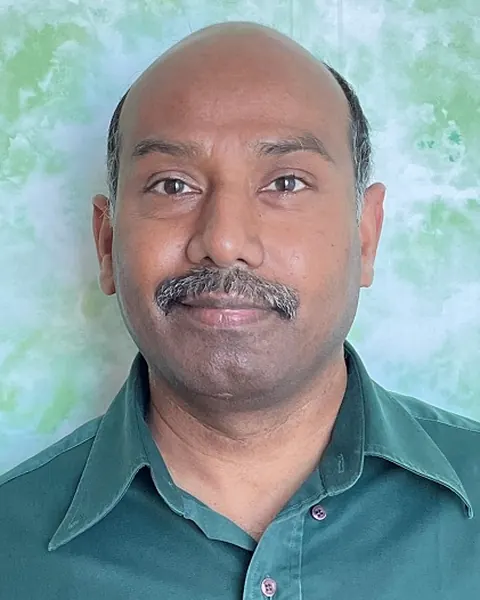
Subramanian G.
Consultant, Drug Discovery
CM4 2026
The organising and academic committees bring together researchers and institutional leaders responsible for the conference programme and organisation.
Patron
Organising committee
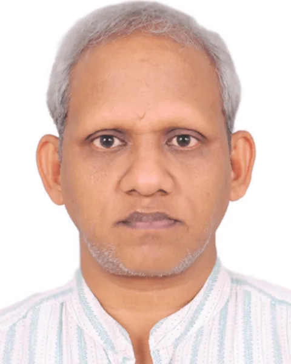
Convenor · Digital University Kerala
↗ MK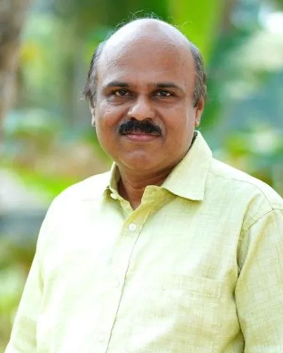
Digital University Kerala
↗ SDR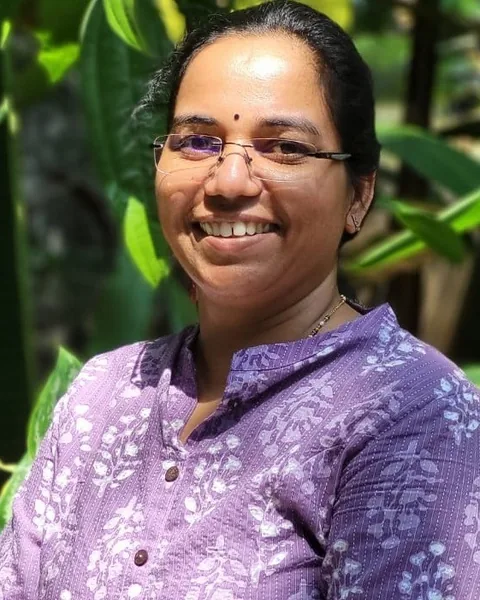
Digital University Kerala
↗ SD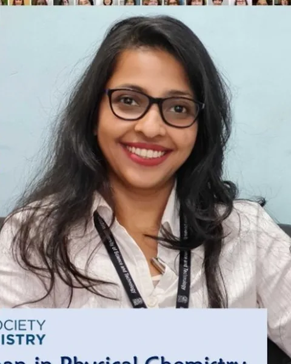
University of Calicut
↗ CHS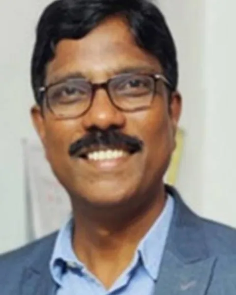
Srinivasa Ramanujan Institute for Basic Sciences
↗ MH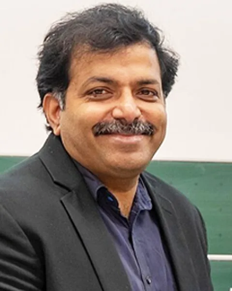
IISER Thiruvananthapuram
↗Academic committee
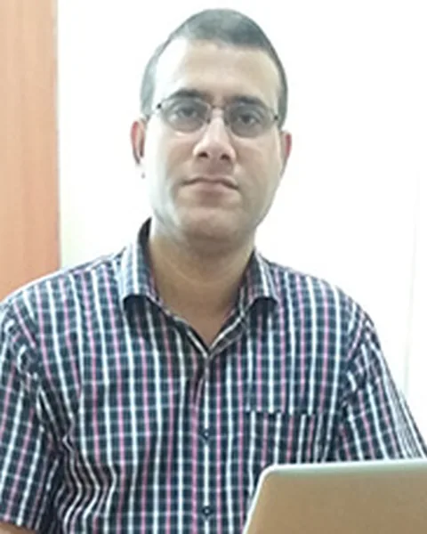
Tezpur University
↗ BP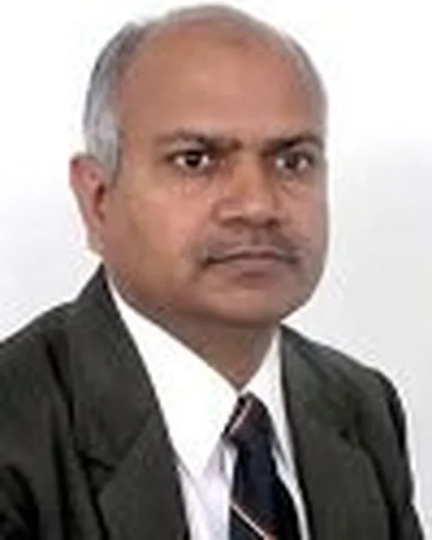
NIPER Mohali
↗ BP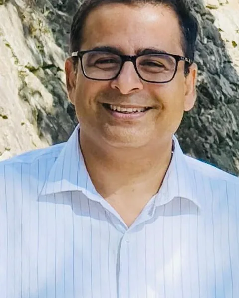
IIT Indore
↗ DU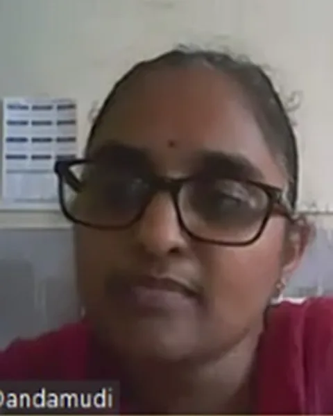
CSIR-CFTRI
↗ DM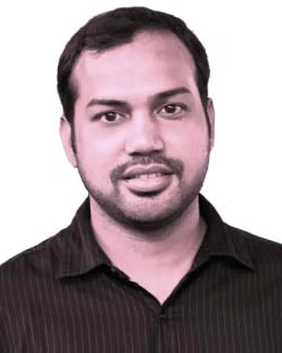
Presidency University
↗
Consultant, Drug Discovery
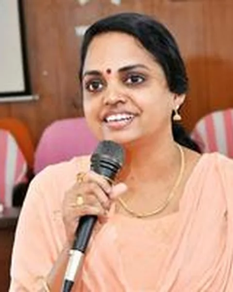
CUSAT
↗ NK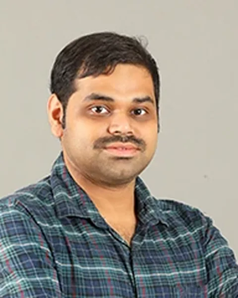
Shiv Nadar University
↗ GNS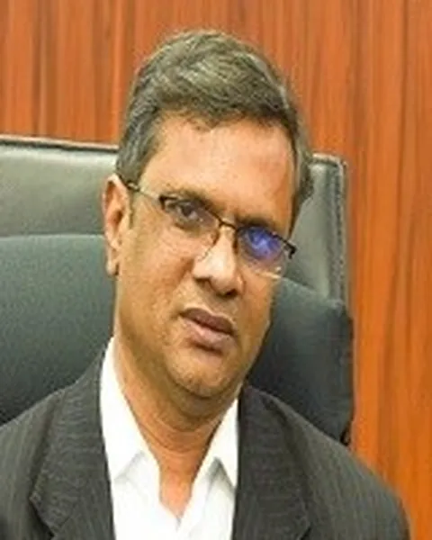
IIT Hyderabad
↗ PPD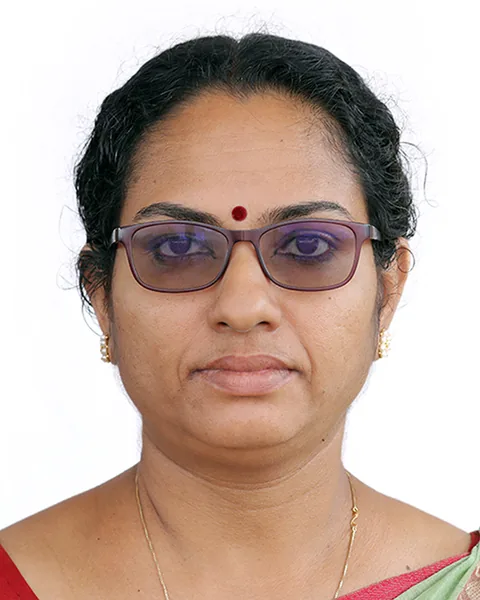
Amrita Vishwa Vidyapeetham
↗ PP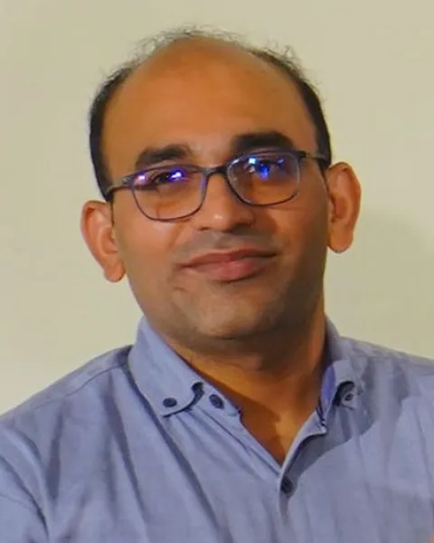
NIT Calicut
↗ PP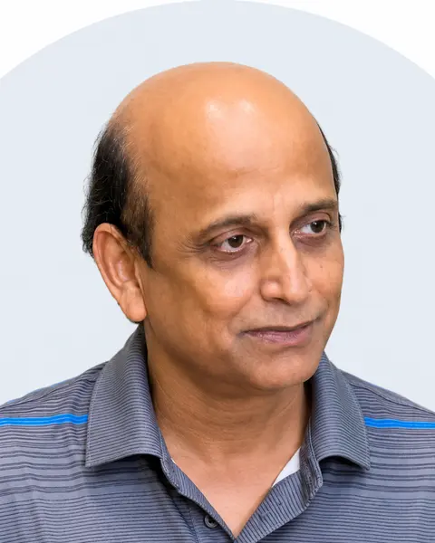
UT Southwestern
↗ DP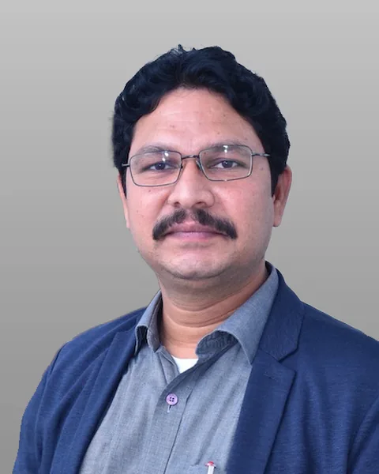
IIT Kanpur
↗ PCP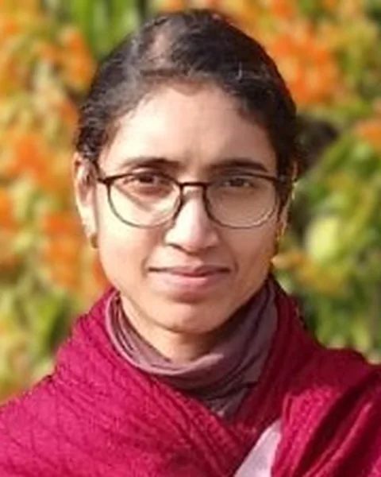
IISER Mohali
↗